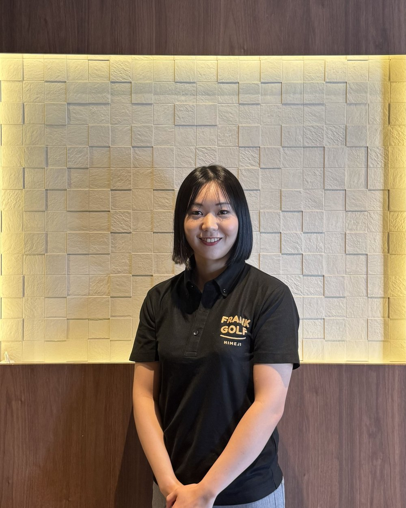
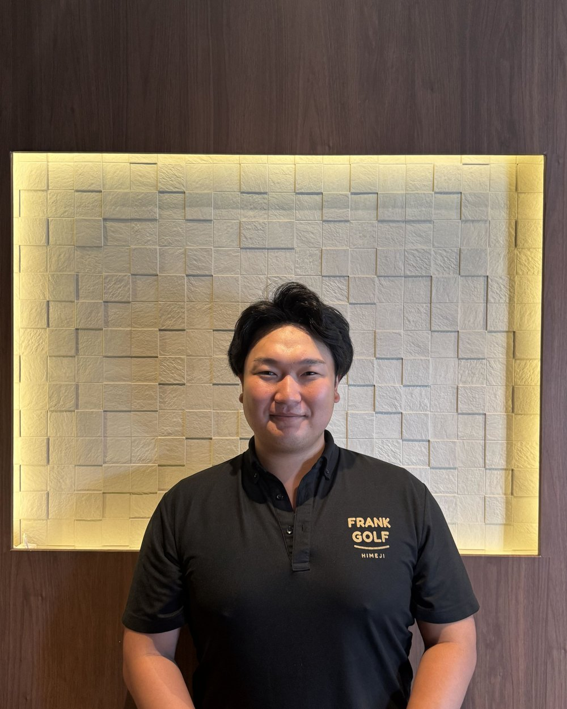

01
感覚ではなく、数字で
弾道・ヘッドスピード・入射角。「なんとなく良くなった」で終わらせません。
 LESSON
LESSONQuick Facts
大人数で習うゴルフスクールではなく、プロがお一人を見るマンツーマンのゴルフ教室です。まずはここだけ確かめてください。
教わったことは、その日のうちに試して、誰かに話す。
これが、いちばん身につく順番だと思っています。
FRANK GOLFでは、プロによるレッスンとシミュレーターの計測データを組み合わせ、
いま直すべき一点をはっきりさせます。そして、教わったことをラウンジで話してみる。
言葉にすると、自分でも分かっていなかったことが整理されます。
ラウンジがあることは、実は上達にも効くと考えています。
01
弾道・ヘッドスピード・入射角。「なんとなく良くなった」で終わらせません。
02
打ったその瞬間に聞けることが、いちばん記憶に残ります。
03
握り方から始める方も、スコアの壁で止まっている方も。
Coach
常駐コーチのご紹介

FRANK GOLF PRO / RARAHEAD COACH
小川 うらら ／ Urara OGAWA
USGTF レベルⅢYouTube「RaRa LESSON」登録者6万人超
関西を拠点に活動するレッスンコーチ。

Kenta ANADACOACH
Kenta ANADA
「飛ばす」と「まとめる」の両方を教えられるコーチ。自己最長飛距離は350ヤードです。
力任せではなく、体の使い方とクラブの入り方から飛距離が伸びる仕組みを組み立て、TrackManの数字で一本ずつ確かめます。スコアをつくるための考え方までお伝えするので、飛距離を伸ばしたい方にも、スコアの壁で止まっている方にも。
Lesson Menu
レッスン内容
会員の方は、所属プロのワンポイントレッスン（約5分）が無料。じっくり見てほしい日は、25分のマンツーマンをチケットでご利用いただけます。担当コーチはコーチ紹介をご覧ください。
レッスン形式
所属プロによるワンポイントレッスン5分（会員は無料・受け放題感覚）／ 追加のパーソナルレッスンは25分
レッスンメニュー
ワンポイントレッスン（会員は受け放題感覚）／ 25分マンツーマン・チケット制も選べます
コーチ紹介
小川うらら（USGTF レベルⅢ・YouTube「RaRa LESSON」登録者6万人超）／穴田賢太（USGTF認定プロ・自己最長飛距離350ヤード）
初心者プログラム
握り方・構えから、所属プロがマンツーマンで順に組み立てます（体験レッスンで最初に目標をおうかがいします）
使用シミュレーター
TrackMan 4・DTECT・OKONGOLF の最新シミュレーター 計3台
レッスン料金
25分マンツーマン 2,500円（税込 2,750円）
FAQ
YOUTUBE
登録者6万人超の

【ご報告】姫路にインドアゴルフスタジオを作りました！
まずは、無料の体験レッスンから。
受付 → カウンセリング → 打席のご案内 → 体験レッスン → ご入会のご案内（約55分）
強引な勧誘はいたしません。手ぶらでお越しください。